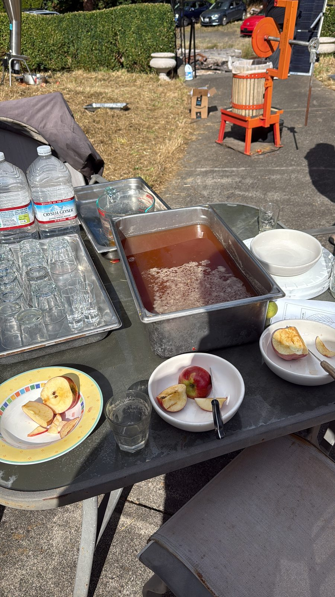
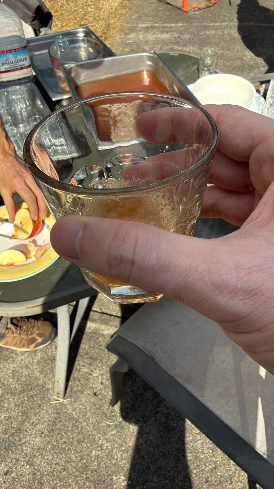

A Washington Apple Haul, Bound for Cider

Somebody's driveway in Longview, Washington turned into an apple-processing line for the afternoon — pictured above, the tray of juice and the tasting plates it landed at. A green plastic bin filled past the brim with pale yellow-green apples, a hand-crank cider press bolted to a plank, and a folding table doing double duty as a sorting station and a tasting bar. This isn't the cider yet. It's the step before it — apples off somebody's trees, sorted, crushed, and pressed into raw juice that some of will go on to become actual cider once it's had time to do what cider does.
Nobody could name most of these apples — except one
Ask a table of people sorting a mixed backyard haul what variety they're holding and the honest answer, most of the time, is a shrug. These trees weren't planted from a nursery tag; they're whatever grew, wherever somebody's yard or an old lot happened to have a tree. Here's the actual clip — the bin getting sorted, then fed into a hand-cranked crusher stencilled "Rainier Gardens Farm" on the hopper, whoever it belongs to:
The conversation on the audio, cleaned up just enough to read on a page, goes about like this:
What kind of apple is this one? — What was that other one you tried? — Honestly, we don't really know any of them. — Except the Cox's Orange. We know that one. — Okay, so these are just whichever ones are ripe enough for cider right now.
That's the real state of a backyard press day: a bin of unlabeled fruit sorted by ripeness and feel, not by variety, with exactly one apple in the mix anybody could actually name — a Cox's Orange Pippin. It stands out for a reason. Cox's Orange Pippin was a chance seedling found around 1825 in a garden in Buckinghamshire, England, and it's been called one of the finest-flavored apples in the world ever since — rich, aromatic, with a tropical edge toward orange that no modern variety quite reproduces. It's also notoriously hard to grow (susceptible to scab, mildew, canker), which is exactly why it's rarely a commercial orchard apple in North America and exactly why it's the one that got recognized by name in a yard full of mystery trees. It's also a genuinely good cider apple — commercial cider makers blend it in for that same aromatic complexity — so pulling it into today's press run wasn't an accident.
The press itself
Once the crusher's done, what goes into the wooden basket isn't whole fruit anymore but pomace — ground apple pulp and skin, loaded a scoopful at a time into a cloth-lined, slatted wooden cylinder bolted to an orange-painted frame. Crank the screw down, and the basket does the rest: juice runs out through the slats and collects in a steel pan underneath while the pomace gets progressively flatter. Here's that step, on video:
What comes out before it's cider
What lands in the catch pan is cloudy, foamy, and the color of weak tea — sweet cider in the American sense, not yet fermented into anything with a kick. Alongside the press, a couple of plates of hand-sliced apples sat out for tasting side by side with the juice (the photo up top), which is really the point of a haul like this: taste the fruit and the fresh juice together before any of it becomes something else.

Why Washington apples, specifically
It's not a coincidence this is happening in Washington: the state grows somewhere around 60–65% of the entire United States apple crop in a normal year, more than every other state combined, and that scale is exactly why a backyard tree here is so often just some apple nobody bothered to identify — the good commercial varieties get all the naming attention, and the yard trees are along for the ride. A haul like this one, sorted by ripeness instead of variety, is what that actually looks like at the ground level, one bin and one afternoon at a time.